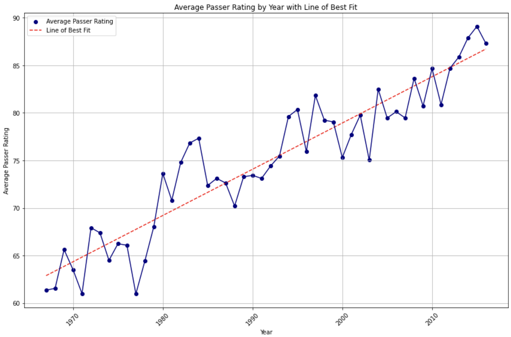
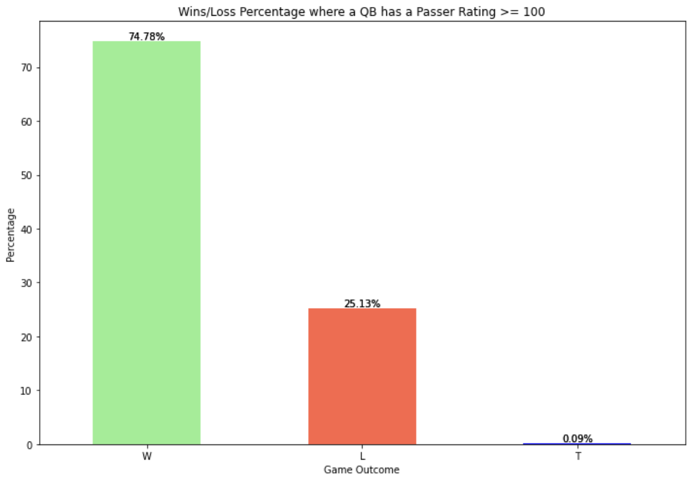

Hi everyone! Here is Brett Netkin, Andre Kirby, and Ashwin Kasargode's final project on the data behind the NFL's best quarterbacks. At any given moment, a football team’s quarterback is the most important person on the field. They make the play calls, assess the defense, and ultimately drive a team’s success or failure. One of the best ways to assess an NFL quarterback’s success is by looking at their passing efficiency. From a team’s perspective, further understanding the factors that affect passing efficiency can provide valuable insights into ways in which the quarterback can improve. Pinpointing these areas of improvement will allow for quarterbacks to show growth in weaker areas more quickly, leading to greater team success. In this project, we aim to analyze the passing efficiency of NFL quarterbacks and identify the key factors that influence their performance. Statistics we may look at include: completion percentage, passing yards per attempt, touchdown-interception ratio, and quarterback rating. The goal is ultimately to gain deeper insights into passing efficiency and figure out which factors are most important in determining a quarterback’s success.
Smith, J., & Brown, A. (2020). "Analyzing Passing Efficiency in the NFL: A Statistical Approach." Journal of Sports Analytics, 7(2), 123-137. https://journals.sagepub.com/doi/full/10.1177/01492063221117525
Johnson, R., & Williams, C. (2019). "Factors Influencing Quarterback Performance in the NFL: A Comparative Study." International Journal of Sports Science & Coaching, 14(3), 289-305. https://pubmed.ncbi.nlm.nih.gov/35531708/
https://www.kaggle.com/datasets/kendallgillies/nflstatistics/data
The data we found is extremely thorough, as it breaks down statistics dating back to the inception of the NFL. It is broken down into basic stats, player-specific stats, team-specific stats, and game-specific stats, which are further broken down into different offensive, defensive, and special teams positions (passing, receiving, running, blocking, rushing, punting, etc.). The data was initially very clean, but we had to reorganize it a bit for our visualizations, especially to look at metrics like passer rating and rushing stats. We also needed to get rid of teams that no longer exist, like the Chicago Rockets. The dataframe we use has 20 categories and over 8,500 data points.
We learned that quarterback passing statistics greatly impact individual game outcomes and overall team success across a season. Teams are able to effectively optimize their performance when they deeply understand quarterback data. For instance, when a quarterback has a passer rating of greater than 100, the team is 75% more likely to win, and quarterbacks that tend to average more running (or yards per carry) are more likely to lose. These two findings tell us that it is important for teams to prioritize high passer rating quarterbacks over quarterbacks who average a large number of runs per game and generally prefer running the ball. Future considerations and studies related to this topic would be looking into the other factors that affect game outcome and passing success. For example, research how wide receiver stats can impact quarterback passer ratings. This would give us a much deeper understanding of the intricacies of passing statistics for not just quarterbacks but the team as a whole. Lastly, we would want to develop predictive models for game outcomes based on quarterback passing and running statistics.
The interactive “Interception Rate (%) Vs. Passer Rating” shows a negative correlation between these two statistics. As the interception rate is lower QBs have higher passer ratings. The visualization also includes a color scale that represents the year which shows how a bulk of the higher passer ratings are within the last 20 years. This also illustrates the upward trend of passer rating over time. Using the tooltip, it can be identified that more recent QBs typically have more passing attempts which plays a part in explaining the trend. The user can use the opacity slider to identify where the bulk of the data is concentrated.
For “Rushing Yards Vs. Passer Rating”, the visualization has a color scale based on passing yards which helps a viewer identify games where QBs had a high volume of passing while also having a lot of rushing yards. This graph explores high performance games within the dataset, showing that a QBs ability to use their legs can help open up the passing game to improve the team’s overall performance.
Looking at average passer rating by year, we wanted to get a broad look at the trend behind quarterback performance over the course of the last ~50 years. We chose to look at the average passer rating because it is a holistic statistic that provides a better idea of overall quarterback performance compared to using passing yards or touchdowns. The data shows that the average passer rating has shown a significant increase over time. This makes sense, as quarterbacks and passing have been an increasingly important part of the game leading to greater investment and usage.
The “Win/Loss Percentage where a QB has a Passer Rating >= 100” bar graph looks at how a good passer rating can possibly determine the outcome of a game. It can be seen that a team wins in 75.78% of games where that team's QB had a passer rating of at least 100 (considered a good QB performance). This provides an insight into how vital a quarterback’s performance is to the success of the team as a whole.
This static visualization looks at QB rushing yards per game for wins, losses, and ties. In this visual we see that QBs typically get less yards per carry in games that they win. This may be attributed to better pass-blocking which allows for a QB to make more passes while running less. Additionally, QBs have to take more risks when losing which may result in running the ball to either save time or get some important yards.